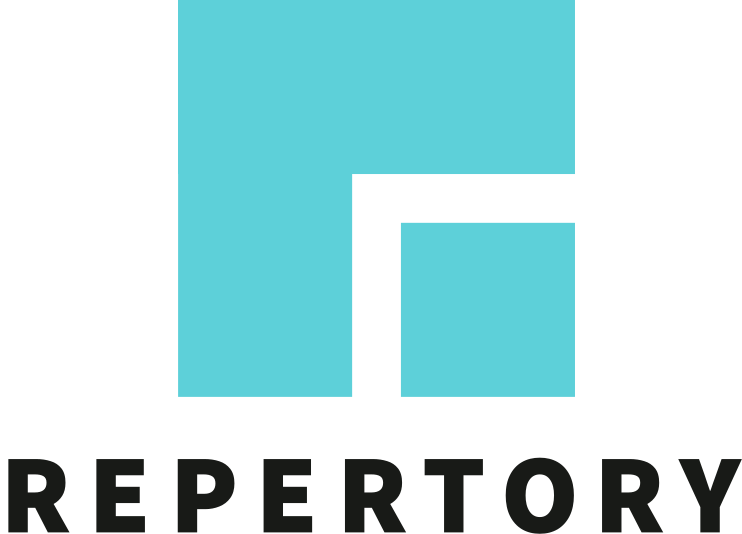
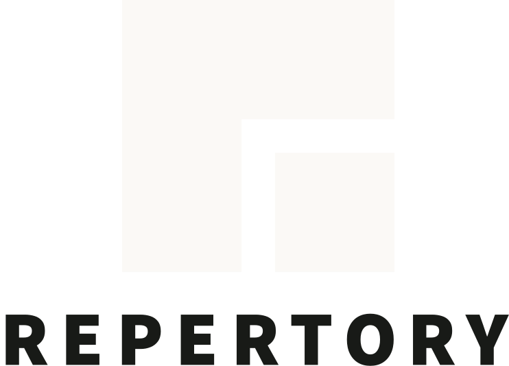
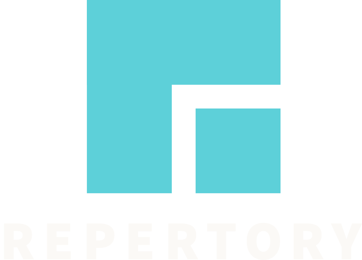

A system in service of its subjects.
Repertory’s consistency is an institutional responsibility, not a uniform aesthetic imposed upon independent culture.
“The most important fact about Repertory is that Repertory is not the focus. The subject is.”
Repertory exists to recognize, support, present, and help sustain cultural work whose worth cannot be measured by scale alone. Recordings, restaurants, books, venues, and temporary gatherings can all have enduring meaning.
When an independent venture enters the picture, its own history, graphic identity, and community remain primary. Repertory is the frame in which those differences can be encountered clearly; it is not a mechanism for erasing them.
Open the manifesto ↗Recognizable continuity without aesthetic domination.
The public umbrella identity reads Repertory, even though the organization is imagined as Repertory Concepts. Its four branches organize activity; none constitutes a separately invented logo. The subject’s independent character is not a problem for the identity system to solve.
The correct decision is often a smaller mark, a measured line of attribution, or a precise structural intervention—not a larger brand presence. This is why the system begins with what is being presented, then decides how Repertory should appear.
Establish its original identity, context, audience, and particular creative language. Do not invent Repertory branding to substitute for missing subject matter.
Decide whether Repertory is curator, publisher, presenter, supporter, or quiet endorser. Its prominence follows that relationship.
Take the Gnomon and wordmark from master vectors. Stretch only one axis by extending endpoints, never by thickening constituent forms.
Color, negative space, paragraph weight, frame placement, and supporting pattern must serve content and follow the approved system.
Four branches.
One parent identity.
Choose a branch to inspect its role, exact primary and support color, and supplied secondary lockup. Branch colors denote attribution, never an automatic palette for every associated venture.
Institutional ideas, cross-disciplinary collaboration, and the curatorial framework connecting the entire undertaking.
Full institutional name: Repertory Concepts.
Three tonal environments.
All three specimens change with the selected branch above. Every mark uses the approved original vector paths; only established figure-and-ground colors vary.



A mark that can open space.
The R Gnomon is the measured relation of a joined, orthogonal main form and its separate lower-right square. Its negative space is as important as its positive fields. It can serve as mark, window, frame, pattern, architectural surround, or material intervention.
Horizontal or vertical endpoint extensions are permitted, but never independent stretching in both axes. Stem and arm thickness are invariant. Gridded cells and lined elements remain equal modules; a nearest-possible fit is preferable to deforming them.
Approved solid and stroked pattern families / Original SVGs supplied in the reference desk.
The quiet work of legibility.
Source Sans Pro supplies the institutional display voice, with Meta Pro for ordinary reading and supporting copy according to the master specimens. The live website uses system fallbacks rather than redistributing proprietary font files.
Vellum supports a lighter body weight; saturated grounds demand more emphasis and the correct polarity. For Patina and Marquee primary fields, lead type reads in India. For Apertivo and Gala primary fields, it reads in Vellum. The lighter support tones need their own contrast decisions—not the white-type shortcut.
Verify combinations in Color LabPresent the work. Preserve its voice.
Repertory’s visual continuity should arrive through a handful of precise decisions: a measured frame, an honest image, a clear relationship between headline and supporting copy, and an attribution that allows the featured subject to remain the center of attention.